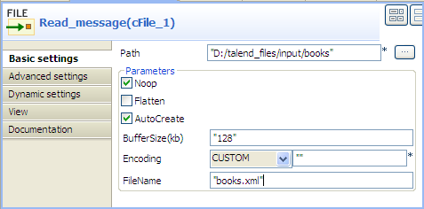
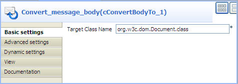
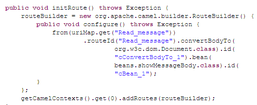

|
Component Family |
Transformation | |
|
Function |
cConvertBodyTo converts the message body to the given class type. | |
|
Purpose |
cConvertBodyTo is used to convert the message body to a given class type. | |
|
Basic settings |
Target Class Name |
Enter the name of the class type that you want to convert the message body to. |
|
Usage |
cConvertBodyTo is used as a middle component in a Route. | |
|
Limitation |
| |
In this scenario, a cConvertBodyTo component is used to convert the body of an XML file into an org.w3c.dom.Document.class. Then a cBean component imports the org.w3c.dom.Document class, checks its contents and prints out the root element name and the content of each category element.
The XML file is as follows:
<bookstore>
<bookshelf>
<category>Cooking</category>
<quantity>100</quantity>
</bookshelf>
<bookshelf>
<category>Languages</category>
<quantity>200</quantity>
</bookshelf>
<bookshelf>
<category>Arts</category>
<quantity>300</quantity>
</bookshelf>
<bookshelf>
<category>Science</category>
<quantity>400</quantity>
</bookshelf>
</bookstore>
Drag and drop the following components from the Palette onto the workspace: cFile, cConvertBodyTo and cBean.
Link cFile to cConvertBodyTo using a Row > Route connection.
Link cConvertBodyTo to cBean using a Row > Route connection.
Label the components to better identify their functionality.
Double-click the cFile component, which is labelled Read_message, to open its Basic settings view in the Component tab.
In the Path field, enter or browse to the path to the source XML file.
If the source file folder contains more than one file, enter the name of the XML file of interest in the FileName field, and leave the other parameters as they are.
Double-click the cConvertBodyTo component, which is labelled Convert_message_body, to open its Basic settings view in the Component tab.
In the Target Class Name field, enter your target class name, org.w3c.dom.Document.class in this scenario.
Double-click the cBean component, which is labelled Print_content, to open its Basic settings view in the Component tab.

In the Bean class field, enter the name of the bean to be invoked, beans.PrintConvertToBean.class in this scenario.
Note that this bean has already been defined in the Code node of the Repository and it looks like this:
package beans; import org.w3c.dom.Document; import org.w3c.dom.Element; import org.w3c.dom.NodeList; public class PrintConvertToBean { /** * print input message * @param message */ public static void helloExample(Document message) { if (message == null) { System.out.println("There's no message here!"); return; } Element rootElement = message.getDocumentElement(); if (rootElement == null) { System.out.println("There's no root element here!"); return; } System.out.println("The root element name is:" + rootElement.getNodeName()); System.out.println("The book categories are:"); NodeList types = rootElement.getElementsByTagName("category"); for(int i = 0;i<types.getLength();i++){ Element child = (Element) types.item(i); System.out.println(child.getFirstChild().getNodeValue()); } } }For more information about creating and using Java Beans, see Talend Open Studio for ESB User Guide.
Press Ctrl+S to save your Route.
Click the Code tab at the bottom of the design workspace to check the generated code.
As shown above, the message
fromthe endpointRead_messagehas its body converted toorg.w3c.dom.Document.classbycConvertBodyTo_1. Then,org.w3c.dom.Document.classis processed by.bean(beans.PrintConvertToBean.class)invoked bycBean_1.Press F6 to execute the Route.
RESULT: The root element name and the contents of the category elements are displayed.